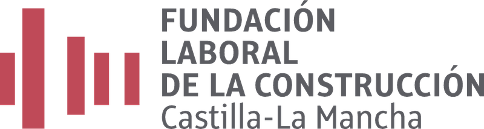

<!DOCTYPE html>
<html lang="es">
<head>
<meta charset="utf-8">
<meta name="viewport" content="width=device-width, initial-scale=1">
<title>Herramientas y equipos del electricista</title>
<style>

:root { --page:#faf7f2; --card:#ffffff; --ink:#2b2620; --ink2:#6b6353; --line:#e8e0d2; --accent:#6b4f1d; --warn-bg:#fdf3e3; --warn-line:#d99a2b; --note-bg:#eef5ee; --note-line:#7ba05b; }
* { box-sizing: border-box; }
html, body { margin: 0; padding: 0; }
body { background: var(--page); color: var(--ink); font-family: 'Segoe UI', system-ui, -apple-system, Arial, sans-serif; font-size: 16px; line-height: 1.55; }
.wrap { max-width: 640px; margin: 0 auto; padding: 20px 16px 48px; }
.cab { display: flex; align-items: center; gap: 14px; margin-bottom: 6px; }
.cab { flex-direction: column; align-items: flex-start; gap: 10px; }
.cab img { width: 105px; height: auto; max-width: 40%; }
.home .cab img { width: 250px; max-width: 80%; }
.cab h1 { font-size: 24px; margin: 0; line-height: 1.2; }
.fact { color: var(--ink2); font-size: 13px; margin-top: 2px; }
.intro { color: var(--ink2); margin: 10px 0 18px; }
.callout { border-radius: 12px; padding: 12px 16px; margin: 14px 0; font-size: 14.5px; overflow-wrap: break-word; }
.callout b { display: block; margin-bottom: 2px; }
.note { background: var(--note-bg); border: 2px solid var(--note-line); }
.warn { background: var(--warn-bg); border: 2px solid var(--warn-line); }
.seccion { margin-top: 22px; }
.seccion > h2 { font-size: 13px; text-transform: uppercase; letter-spacing: .06em; color: var(--ink2); margin: 0 0 10px; font-weight: 600; }
input[type=search] { width: 100%; padding: 12px 14px; font-size: 16px; border: 1px solid var(--line); border-radius: 12px; background: var(--card); color: var(--ink); }
.ficha-card { display: block; text-decoration: none; color: var(--ink); background: var(--card); border: 1px solid var(--line); border-radius: 16px; overflow: hidden; margin-bottom: 16px; }
.ficha-card img { display: block; width: 100%; aspect-ratio: 4 / 3; object-fit: cover; }
.ficha-card-body { display: flex; gap: 14px; align-items: flex-start; padding: 14px 16px 16px; }
.ficha-title { font-weight: 600; font-size: 16.5px; overflow-wrap: break-word; }
.vacio { color: var(--ink2); font-size: 14.5px; padding: 8px 2px; }
.btn-hecho { padding: 10px 18px; border-radius: 10px; border: 1px solid var(--line); background: var(--card); color: var(--ink2); font-size: 14.5px; cursor: pointer; }
.btn-hecho.sel { background: var(--accent); border-color: var(--accent); color: #fff; font-weight: 600; }
.caption { color: var(--ink2); font-size: 12.5px; margin-top: 8px; overflow-wrap: break-word; }
.caption a { color: var(--accent); overflow-wrap: anywhere; }
.volver { display: inline-block; margin-top: 10px; padding: 10px 18px; border-radius: 10px; border: 1px solid var(--line); background: var(--card); color: var(--ink); text-decoration: none; font-size: 14.5px; }
.pie { margin-top: 30px; color: var(--ink2); font-size: 12.5px; border-top: 1px solid var(--line); padding-top: 14px; }

.chips { display: flex; flex-wrap: wrap; gap: 8px; margin-top: 10px; }
.chips button { padding: 9px 12px; border-radius: 10px; border: 1px solid var(--line); background: var(--card); color: var(--ink2); font-size: 14px; cursor: pointer; }
.chips button.sel { background: var(--accent); border-color: var(--accent); color: #fff; font-weight: 600; }
.grid { display: grid; grid-template-columns: 1fr 1fr; gap: 12px; }
.grid .ficha-card { margin: 0; }
.grid .ficha-card-body { padding: 10px 12px 12px; flex-direction: column; gap: 2px; }
.grid .ficha-title { font-size: 16px; }
.ya { color: #4d7a2e; font-weight: 600; font-size: 12.5px; }
.tambien { color: var(--ink2); margin: 4px 0 14px; overflow-wrap: break-word; }
.uso { font-size: 18px; margin: 10px 0 14px; overflow-wrap: break-word; }
.big img { display: block; width: 100%; border-radius: 16px; border: 1px solid var(--line); }
@media (max-width: 340px) { .grid { grid-template-columns: 1fr; } }

.visual { display: block; position: relative; overflow: hidden; }
.con-marca::after { content: ''; position: absolute; left: 2.5%; bottom: 3%; width: 8.5%; max-width: 85px; aspect-ratio: 82 / 83; background: url('img/marca.png') center / contain no-repeat; pointer-events: none; }
fieldset{border:0;padding:0;margin:22px 0}legend{font-weight:600;font-size:18px;margin-bottom:12px}.opcion{display:flex;align-items:flex-start;gap:10px;background:var(--card);border:1px solid var(--line);border-radius:12px;padding:14px;margin:10px 0;cursor:pointer}.opcion input{margin-top:6px;accent-color:var(--accent);flex:none}.principal{background:var(--accent);color:white}.ej-card{display:flex;justify-content:space-between;align-items:center;gap:12px;background:var(--card);border:1px solid var(--line);border-radius:12px;padding:14px;margin:10px 0;text-decoration:none;color:var(--ink)}.ej-card .ya{flex:none}.ej-nav{display:flex;justify-content:space-between;gap:12px}.practica p,.datos p{margin:6px 0}progress{width:100%;accent-color:var(--accent)}button,a,input{touch-action:manipulation}button:focus-visible,a:focus-visible,input:focus-visible{outline:3px solid #9b6d1c;outline-offset:3px}.volver{max-width:100%}

.big img{display:block;width:100%;border-radius:16px;border:1px solid var(--line)}.ej-card .ya{color:#4d7a2e;font-size:13px}.ej-card{flex-wrap:wrap}

</style>
</head>
<body>
<div id="app" class="wrap"></div>
<script>
const TOOLS = [{"slug": "pelacables", "nombre": "Pelacables", "cat": "mano", "tambien": "Pelacables automático", "uso": "Quita el aislante (la funda de plástico) del cable y deja el cobre al descubierto, sin cortar los hilos de dentro.", "seg": "Solo se usa con el circuito sin tensión. Todo cable se trata como si tuviera tensión.", "ojo": "", "medida": false, "url": "https://www.hogarmania.com/bricolaje/taller/herramientas/pelacables-8169.html"}, {"slug": "destornillador_aislado", "nombre": "Destornillador aislado 1000 V", "cat": "mano", "tambien": "Destornillador VDE, destornillador de electricista", "uso": "Aprieta y afloja tornillos en cuadros eléctricos y mecanismos. Este es del tipo aislado para electricista: se fabrica según la norma IEC/EN 60900.", "seg": "El aislamiento ayuda a proteger, pero por sí solo no autoriza a trabajar con tensión: se trabaja sin tensión, con la formación y la autorización correspondientes.", "ojo": "No es un destornillador normal. El color del mango no demuestra nada: lo importante es el marcado de cada herramienta. La norma IEC/EN 60900 es el requisito de fabricación; el símbolo VDE, cuando lo lleva, es un sello de certificación de un organismo alemán.", "medida": false, "url": "https://www.milwaukeetool.com/es/productos/detalles/juego-de-10-destornilladores-aislados-de-1000-v-con-estuche-de-goma-eva/48-22-2210"}, {"slug": "alicate_universal", "nombre": "Alicate universal aislado", "cat": "mano", "tambien": "Alicates universales aislados 1000 V", "uso": "Sujeta piezas, dobla y corta cable. Es el alicate de boca ancha de toda la vida, pero con mangos aislados para electricista.", "seg": "Este tipo se fabrica aislado según la norma IEC/EN 60900. El color no lo demuestra: hay que comprobar el marcado y el estado de cada herramienta. El aislamiento por sí solo no autoriza a trabajar con tensión.", "ojo": "", "medida": false, "url": "https://www.bellota.com/es-es/producto/alicate-universal-aislado-para-trabajos-electricos-de-sujecion-con-tension-hasta-1-000v-eaa-26102vde/"}, {"slug": "alicate_corte", "nombre": "Alicate de corte diagonal aislado", "cat": "mano", "tambien": "Alicate de corte", "uso": "Corta hilos y cables compatibles mediante filos de corte dispuestos en diagonal.", "seg": "Este tipo se fabrica aislado según la norma IEC/EN 60900. El color no lo demuestra: hay que comprobar el marcado y el estado de cada herramienta. El aislamiento por sí solo no autoriza a trabajar con tensión.", "ojo": "No es el alicate universal: este solo corta.", "medida": false, "url": "https://www.ferreteriapalacios.es/alicates-aislados/alicate-corte-diagonal-aislado-1000v-160-mm-knipex.html"}, {"slug": "alicate_punta", "nombre": "Alicate de punta larga aislado", "cat": "mano", "tambien": "Alicate de boca semicircular, alicate de punta", "uso": "Agarra y dobla cable en sitios estrechos, donde no caben las manos ni el alicate universal.", "seg": "Este tipo se fabrica aislado según la norma IEC/EN 60900. El color no lo demuestra: hay que comprobar el marcado y el estado de cada herramienta. El aislamiento por sí solo no autoriza a trabajar con tensión.", "ojo": "", "medida": false, "url": "https://adajusa.es/es/4576-alicates-aislados-1000v"}, {"slug": "crimpadora", "nombre": "Crimpadora de terminales", "cat": "mano", "tambien": "Tenaza de crimpar, alicates de terminales", "uso": "Une un terminal al cable aplastándolo (crimpar), para que la conexión quede firme y no se suelte.", "seg": "El terminal, la sección y la mordaza deben ser compatibles. Solo se trabaja en cables sin tensión; tu docente te indicará el útil adecuado.", "ojo": "", "medida": false, "url": "https://www.elmecaniquejo.com/herramientas-manuales/herramientas-de-sujecion-amarre-y-extraccion/crimpadoras-o-alicates-de-terminales/"}, {"slug": "tijeras_electricista", "nombre": "Tijeras de electricista", "cat": "mano", "tambien": "", "uso": "Tijeras fuertes de hojas cortas, muchas veces dentadas. Cortan cables finos, cinta y bridas.", "seg": "Cortan mucho: dedos lejos de las hojas.", "ojo": "No son tijeras de papel: son más fuertes y de hojas más cortas.", "medida": false, "url": "https://www.portersa.com/tijeras-electricista-usos-ventajas/"}, {"slug": "guia_pasacables", "nombre": "Guía pasacables", "cat": "mano", "tambien": "Sonda pasacables, guía de nylon", "uso": "Cinta o varilla larga y flexible. Se mete por el tubo corrugado de la pared para guiar los cables hasta el otro lado.", "seg": "Se usa en instalaciones sin tensión.", "ojo": "", "medida": false, "url": "https://www.gaestopas.com/es/catalogo/herramientas-y-accesorios/guia-pasacables-de-nylon-de-%C3%B83mm-149s"}, {"slug": "cortacables", "nombre": "Cortacables", "cat": "mano", "tambien": "Tijera cortacables", "uso": "Corta cables compatibles con sus cuchillas curvas, según el material y la sección admitidos.", "ojo": "No es una cizalla para acero: la capacidad depende del modelo.", "seg": "Se utiliza en cables sin tensión, con el corte alejado de las manos.", "medida": false, "url": "https://www.knipex.com/es-es/productos/el%C3%A9ctrico", "imagen": "cortacables.webp", "marca": true}, {"slug": "cuchillo_pelacables", "nombre": "Cuchillo pelacables", "cat": "mano", "tambien": "Cuchillo de electricista", "uso": "Retira la cubierta de ciertos cables sin dañar el aislamiento interior, según el tipo de útil.", "ojo": "No es un cuchillo de cocina ni un comprobador de tensión.", "seg": "Es un útil cortante. Solo para cables sin tensión y bajo la supervisión del docente.", "medida": false, "url": "https://www.knipex.com/es-es/productos/el%C3%A9ctrico", "imagen": "cuchillo_pelacables.webp", "marca": true}, {"slug": "crimpadora_punteras", "nombre": "Crimpadora de punteras", "cat": "mano", "tambien": "Tenaza para punteras huecas", "uso": "Comprime punteras sobre conductores flexibles para preparar conexiones compatibles.", "ojo": "No es la misma mordaza que se usa para todos los terminales.", "seg": "Elige puntera, sección y herramienta compatibles; no se usa en conductores con tensión.", "medida": false, "url": "https://www.knipex.com/es-es/productos/el%C3%A9ctrico", "imagen": "crimpadora_punteras.webp", "marca": true}, {"slug": "destornillador_dinamometrico", "nombre": "Destornillador dinamométrico", "cat": "mano", "tambien": "Destornillador de par controlado", "uso": "Permite apretar tornillos con un par de apriete controlado, indicado por el fabricante del elemento.", "ojo": "No es un destornillador eléctrico; controla el apriete.", "seg": "No todos los modelos son aislados. El ajuste y el uso los indica el docente; se trabaja sin tensión.", "medida": false, "url": "https://wiha.com/es/es/herramientas/herramientas-dinamometricas/", "imagen": "destornillador_dinamometrico.webp", "marca": true}, {"slug": "llave_armarios", "nombre": "Llave para armarios eléctricos", "cat": "mano", "tambien": "Llave universal de armarios", "uso": "Abre y cierra cerraduras de determinados armarios técnicos mediante bocas de distintas formas.", "ojo": "No es una herramienta para comprobar la seguridad del cuadro.", "seg": "Tener la llave no autoriza a abrir ni manipular un cuadro eléctrico.", "medida": false, "url": "https://www.knipex.com/es-es/productos/el%C3%A9ctrico", "imagen": "llave_armarios.webp", "marca": true}, {"slug": "cortatubos", "nombre": "Cortatubos para plástico", "cat": "montaje", "tambien": "Tijera cortatubos", "uso": "Corta tubos de plástico compatibles con su cuchilla y su capacidad.", "ojo": "No todos los cortatubos sirven para cualquier material o diámetro.", "seg": "Sujeta el tubo y mantén los dedos lejos de la cuchilla.", "medida": false, "url": "https://www.knipex.com/es-es/productos/cortatubos/cortatubos-para-tubos-multicapa-y-tubos-de-pl%C3%A1stico/cortatubos-para-tubos-multicapa-y-tubos-de-pl%C3%A1stico/902540", "imagen": "cortatubos.webp", "marca": true}, {"slug": "sierra_arco", "nombre": "Sierra de arco", "cat": "montaje", "tambien": "Arco de sierra", "uso": "Corta perfiles o tubos compatibles utilizando la hoja adecuada.", "ojo": "No es un serrucho de madera: lleva una hoja estrecha tensada en un arco.", "seg": "Fija la pieza y protege los ojos; evita que la mano quede en la trayectoria de corte.", "medida": false, "url": "https://www.bellota.com/es-es/producto/arco-de-acero-para-hoja-de-sierra-corte-metal-profesional-4622/", "imagen": "sierra_arco.webp", "marca": true}, {"slug": "flexometro", "nombre": "Flexómetro", "cat": "montaje", "tambien": "Metro de cinta", "uso": "Mide longitudes para replantear recorridos y colocar elementos.", "ojo": "Mide distancias; no detecta cables ni tensión.", "seg": "Recoge la cinta despacio y evita acercarla a partes eléctricas accesibles.", "medida": false, "url": "https://www.bellota.com/es-es/producto/flexometro-cromado-para-trabajos-de-medicion-50016/", "imagen": "flexometro.webp", "marca": true}, {"slug": "nivel", "nombre": "Nivel de burbuja", "cat": "montaje", "tambien": "Nivel", "uso": "Comprueba la horizontalidad o verticalidad de elementos durante el montaje.", "ojo": "No es un comprobador eléctrico.", "seg": "No lo introduzcas en cuadros ni lo apoyes sobre partes con tensión.", "medida": false, "url": "https://www.bosch-professional.com/es/es/niveles-7867314-ocs-ac/", "imagen": "nivel.webp", "marca": true}, {"slug": "taladro_atornillador", "nombre": "Taladro atornillador", "cat": "montaje", "tambien": "Atornillador a batería", "uso": "Realiza perforaciones o atornillados de montaje con accesorios adecuados.", "ojo": "No sustituye al destornillador dinamométrico cuando se exige un par controlado.", "seg": "Comprueba que no haya servicios ocultos antes de perforar; no se emplea sobre partes con tensión.", "medida": false, "url": "https://www.bosch-professional.com/es/es/", "imagen": "taladro_atornillador.webp", "marca": true}, {"slug": "buscapolos", "nombre": "Buscapolos", "cat": "medida", "tambien": "Destornillador buscapolos, puntero", "uso": "Comprobador sencillo con forma de destornillador que puede indicar presencia de tensión mediante una luz.", "seg": "Si la luz enciende, es una indicación de posible presencia de tensión. Y si no enciende NO demuestra que no la haya: puede fallar. Asegurar que no hay tensión lo hace personal autorizado, con el equipo adecuado.", "ojo": "Parece un destornillador, pero no sirve para apretar tornillos.", "medida": true, "url": "https://www.sumidelec.com/blog/como-comprobar-si-tenemos-electricidad"}, {"slug": "detector_tension", "nombre": "Comprobador de tensión sin contacto", "cat": "medida", "tambien": "Detector de tensión, lápiz detector", "uso": "Equipo con forma de lápiz que puede advertir de presencia de tensión sin contacto directo, dentro de sus límites de detección.", "seg": "Da una primera indicación de que hay tensión, pero si no avisa NO demuestra que no la haya. No es una prueba de seguridad.", "ojo": "No es un bolígrafo ni una linterna: es un comprobador eléctrico.", "medida": true, "url": "https://wiha.com/es/es/herramientas/equipos-de-medicion-electricos/detectores-de-tension-sin-contacto/"}, {"slug": "comprobador_bipolar", "nombre": "Comprobador de tensión de dos polos", "cat": "medida", "tambien": "Comprobador bipolar, verificador de tensión", "uso": "Aparato con dos puntas que tocan dos puntos del circuito a la vez. Es el equipo que usa el personal autorizado para comprobar que ya no hay tensión antes de trabajar.", "seg": "Comprobar la ausencia de tensión forma parte del trabajo eléctrico cualificado: lo hace una persona con la formación y la autorización correspondientes.", "ojo": "No es el buscapolos: el buscapolos toca un solo punto y no sirve para asegurar que no hay tensión.", "medida": true, "url": "https://wiha.com/es/es/herramientas/equipos-de-medicion-electricos/comprobadores-de-tension-y-paso/"}, {"slug": "polimetro", "nombre": "Polímetro", "cat": "medida", "tambien": "Multímetro, tester", "uso": "Aparato de medida con pantalla y una rueda para elegir qué medir: tensión, corriente o resistencia, entre otras cosas.", "seg": "Una conexión o una función inadecuadas pueden causar un accidente. El equipo, las puntas y su categoría deben ser adecuados a la medición; su uso corresponde al personal formado y autorizado para la tarea.", "ojo": "", "medida": true, "url": "https://wiha.com/es/es/herramientas/equipos-de-medicion-electricos/multimetros/"}, {"slug": "pinza_amperimetrica", "nombre": "Pinza amperimétrica", "cat": "medida", "tambien": "", "uso": "Equipo que mide corriente mediante una mordaza alrededor de un conductor, dentro de las condiciones admitidas por el modelo.", "seg": "La selección del equipo y la medición requieren formación y el procedimiento adecuado; no se improvisan sobre una instalación.", "ojo": "No es una tenaza de corte. La imagen no indica dónde ni cómo debe realizarse una medición.", "medida": true, "url": "https://www.fluke.com/es-es/informacion/blog/pinzas/el-abece-de-las-pinzas-amperimetricas"}, {"slug": "megohmetro", "nombre": "Medidor de aislamiento", "cat": "medida", "tambien": "Megóhmetro, medidor de resistencia de aislamiento", "uso": "Evalúa la resistencia de aislamiento de equipos o circuitos mediante ensayos específicos.", "ojo": "No es solo un polímetro: puede generar una tensión de prueba.", "seg": "Solo reconocer. Sus ensayos requieren formación y pueden generar tensiones peligrosas.", "medida": true, "url": "https://www.fluke.com/es-es/producto/comprobacion-electrica/comprobadores-de-aislamiento/fluke-1577", "imagen": "megohmetro.webp", "marca": true}, {"slug": "comprobador_instalaciones", "nombre": "Comprobador de instalaciones", "cat": "medida", "tambien": "Comprobador multifunción", "uso": "Equipo para realizar verificaciones de instalaciones, con funciones que dependen del modelo.", "ojo": "No es un detector sin contacto ni un simple comprobador de enchufes.", "seg": "Solo reconocer. Los ensayos y la interpretación de resultados corresponden al personal competente.", "medida": true, "url": "https://www.fluke.com/es-es/producto/comprobacion-electrica/comprobadores-de-instalaciones/fluke-1672-1673fc-1674fc", "imagen": "comprobador_instalaciones.webp", "marca": true}, {"slug": "detector_materiales", "nombre": "Detector de materiales", "cat": "medida", "tambien": "Detector de pared, detector de cables y metales", "uso": "Ayuda a localizar determinados materiales o servicios ocultos antes de perforar, dentro de sus límites.", "ojo": "No garantiza encontrar todos los cables ni demuestra que una instalación esté sin tensión.", "seg": "Una indicación negativa no confirma que sea seguro perforar; debe completarse la comprobación del lugar.", "medida": true, "url": "https://www.bosch-professional.com/es/es/detectores-101302-ocs-c/", "imagen": "detector_materiales.webp", "marca": true}, {"slug": "guantes_aislantes", "nombre": "Guantes aislantes", "cat": "proteccion", "tambien": "Guantes dieléctricos", "uso": "Guantes de goma gruesa que protegen del contacto eléctrico. Hay varias clases según la tensión para la que están hechos, y la clase viene marcada en el guante.", "seg": "Son un equipo de protección y nunca son la única protección. La clase se comprueba en el marcado del guante: ni el color ni el aspecto demuestran su estado. Se revisan antes de cada uso y pasan revisiones periódicas según el fabricante y la normativa. El guante adecuado lo elige el profesional responsable.", "ojo": "", "medida": false, "url": "https://www.insst.es/documentacion/colecciones-tecnicas/fichas-de-seleccion-y-uso-de-epi-fsu-epi/guantes-aislantes-de-la-electricidad"}, {"slug": "bloqueo", "nombre": "Dispositivo de bloqueo y candado", "cat": "proteccion", "tambien": "Bloqueo eléctrico, consignación", "uso": "Ayuda a impedir una reconexión durante un trabajo conforme al procedimiento de consignación.", "ojo": "El candado no comprueba que no haya tensión.", "seg": "Su selección y colocación forman parte de un procedimiento que realiza el personal autorizado.", "medida": false, "url": "https://www.insst.es/materias/riesgos/seguridad-en-el-trabajo/riesgo-electrico", "imagen": "bloqueo.webp", "marca": true}, {"slug": "alfombrilla_aislante", "nombre": "Alfombrilla aislante eléctrica", "cat": "proteccion", "tambien": "Alfombra dieléctrica", "uso": "Elemento aislante para el puesto de trabajo en aplicaciones definidas por su clase y marcado.", "ojo": "No es una alfombra de goma corriente; el aspecto no demuestra su protección.", "seg": "Se selecciona y revisa según la evaluación del riesgo y las instrucciones del fabricante; no es protección suficiente por sí sola.", "medida": false, "url": "https://www.catuelec.com/sites/default/files/MP_Mat.pdf", "imagen": "alfombrilla_aislante.webp", "marca": true}, {"slug": "pantalla_facial", "nombre": "Pantalla facial para riesgo eléctrico", "cat": "proteccion", "tambien": "Visor de protección frente al arco eléctrico", "uso": "Protege cara y ojos frente a riesgos para los que el conjunto esté específicamente certificado.", "ojo": "Una pantalla contra salpicaduras no equivale a una pantalla para arco eléctrico.", "seg": "La protección y el conjunto compatibles los selecciona el responsable según el riesgo; no sustituye las demás medidas.", "medida": false, "url": "https://sofamel.com/es/pr/cascos-de-seguridad/mod-sp-182-195-168", "imagen": "pantalla_facial.webp", "marca": true}, {"slug": "cinta_aislante", "nombre": "Cinta aislante", "cat": "material", "tambien": "Cinta de electricista", "uso": "Cinta adhesiva de plástico (PVC). Sirve para aislar y proteger conexiones eléctricas.", "seg": "Es solo material auxiliar: no arregla por sí sola una instalación ni hace seguro tocar un cable con tensión.", "ojo": "", "medida": false, "url": "https://www.3m.com.es/3M/es_ES/construccion-electrica-mantenimiento-es/soluciones/cintas-electricas/insulation-and-protection-v2/"}, {"slug": "terminales", "nombre": "Terminales eléctricos", "cat": "material", "tambien": "Terminales de crimpado, punteras", "uso": "Piezas pequeñas de metal, muchas con funda de colores. Se crimpan en el extremo del cable para conectarlo bien.", "seg": "", "ojo": "Las punteras huecas son un tipo de terminación. No se montan todos los terminales con la misma mordaza.", "medida": false, "url": "https://www.psolera.com/es/catalogo/conexion-y-fijacion/dispositivos-de-conexion-terminales-y-aislamientos/terminales"}, {"slug": "bridas", "nombre": "Bridas", "cat": "material", "tambien": "Bridas de nylon, sujetacables", "uso": "Tiras de plástico que se cierran alrededor de los cables para agruparlos y sujetarlos.", "seg": "", "ojo": "", "medida": false, "url": "https://adajusa.com/es/888-bridas-de-sujeccion"}, {"slug": "tubo_corrugado", "nombre": "Tubo corrugado", "cat": "material", "tambien": "", "uso": "Tubo flexible con anillos. Va por dentro de la pared o del techo y protege los cables de la instalación.", "seg": "", "ojo": "No es una manguera de agua: es material eléctrico.", "medida": false, "url": "https://www.wurth.es/catalogo/instaladores/materiales-de-instalaciones-electricas/tubo-de-instalacion-electrico/tubo-de-instalacion-flexible-electrico"}, {"slug": "bornes", "nombre": "Bornes de conexión", "cat": "material", "tambien": "Bornas, conectores de conexión", "uso": "Unen conductores mediante sistemas de conexión compatibles con su tipo y sección.", "ojo": "No todos los bornes admiten los mismos cables, intensidades o condiciones de uso.", "seg": "Se instalan sin tensión, siguiendo las características del fabricante.", "medida": false, "url": "https://www.wago.com/es/productos/interconexiones-el%C3%A9ctricas/instalacion-bornas-y-conectores", "imagen": "bornes.webp", "marca": true}, {"slug": "caja_derivacion", "nombre": "Caja de derivación", "cat": "material", "tambien": "Caja de conexiones, caja de registro", "uso": "Aloja y protege conexiones de una instalación según el tipo de caja y su uso previsto.", "ojo": "No es un cuadro eléctrico completo.", "seg": "Su elección y montaje deben mantener la protección y accesibilidad exigidas en la instalación.", "medida": false, "url": "https://www.psolera.com/es/catalogo/envolventes/cajas-estancas", "imagen": "caja_derivacion.webp", "marca": true}, {"slug": "canaleta", "nombre": "Canaleta eléctrica", "cat": "material", "tambien": "Canal de instalación", "uso": "Canal con tapa para alojar y conducir cables en montajes compatibles.", "ojo": "No es un tubo corrugado; su forma y sistema de fijación son diferentes.", "seg": "El tipo, la capacidad y las condiciones de montaje los determina el proyecto y el fabricante.", "medida": false, "url": "https://www.hellermanntyton.es/binaries/content/assets/local-pdf-files/es/tarifa_2025.pdf", "imagen": "canaleta.webp", "marca": true}, {"slug": "carril_din", "nombre": "Carril DIN", "cat": "material", "tambien": "Perfil de montaje", "uso": "Perfil metálico para fijar aparatos compatibles dentro de cuadros u otras envolventes.", "ojo": "Es un soporte mecánico; no es por sí mismo un conductor de protección.", "seg": "El montaje y la puesta a tierra, cuando proceda, los define la instalación.", "medida": false, "url": "https://www.wago.com/es/conectores/adaptador-de-montaje/p/832-1038", "imagen": "carril_din.webp", "marca": true}, {"slug": "prensaestopas", "nombre": "Prensaestopas", "cat": "material", "tambien": "Racor pasacables", "uso": "Pieza que sujeta y sella la entrada de un cable en una envolvente compatible.", "ojo": "No es una simple tuerca ni sustituye a una conexión eléctrica.", "seg": "Debe corresponder al diámetro del cable y a la protección requerida de la envolvente.", "medida": false, "url": "https://www.hellermanntyton.es/binaries/content/assets/local-pdf-files/es/tarifa_2025.pdf", "imagen": "prensaestopas.webp", "marca": true}, {"slug": "termorretractil", "nombre": "Funda termorretráctil", "cat": "material", "tambien": "Tubo termorretráctil, macarrón termorretráctil", "uso": "Funda que se contrae con calor para proteger o aislar aplicaciones compatibles.", "ojo": "No repara por sí sola cualquier daño ni permite manipular cables con tensión.", "seg": "Se utiliza sin tensión y con el equipo y la temperatura indicados por el fabricante; evita quemaduras.", "medida": false, "url": "https://www.hellermanntyton.es/binaries/content/assets/local-pdf-files/es/tarifa_2025.pdf", "imagen": "termorretractil.webp", "marca": true}];
const CATS = [["mano", "Herramientas de mano"], ["montaje", "Montaje y replanteo"], ["medida", "Medir y comprobar (solo reconocer)"], ["proteccion", "Protección"], ["material", "Material y consumibles"]];
const state = { vista: 'home', slug: null, buscar: '', cat: 'todas', ya: {} };
const app = document.getElementById('app');
function esc(s) { const d = document.createElement('div'); d.textContent = s; return d.innerHTML.replace(/"/g, '&quot;').replace(/'/g, '&#39;'); }
function norm(s) { return (s || '').toLowerCase().normalize('NFD').replace(/[\u0300-\u036f]/g, ''); }
function irTool(s) { state.vista = 'tool'; state.slug = s; window.scrollTo(0, 0); location.hash = '/ficha/' + s; render(); }
function irHome() { state.vista = 'home'; state.slug = null; location.hash = '/'; render(); }
window.addEventListener('hashchange', () => {
  const em=location.hash.match(/^#\/ejercicios(?:\/([a-z0-9_]+))?$/);
  if(em&&(!em[1]||EJERCICIOS.some(e=>e.slug===em[1]))){state.vista=em[1]?'ejercicio':'ejercicios';state.slug=em[1]||null;window.scrollTo(0,0);render();return;}
  const m = location.hash.match(/#\/ficha\/([a-z_]+)/);
  if (m && TOOLS.some(t => t.slug === m[1])) { state.vista = 'tool'; state.slug = m[1]; } else { state.vista = 'home'; state.slug = null; }
  render();
});
function head(titulo, fact, intro) {
  return '<div class="cab"><div><h1>' + esc(titulo) + '</h1><div class="fact">' + esc(fact) + '</div></div></div>' + (intro ? '<p class="intro">' + esc(intro) + '</p>' : '');
}
function renderHome() {
  const q = norm(state.buscar);
  const lista = TOOLS.filter(t => (state.cat === 'todas' || t.cat === state.cat) && (!q || q.split(/\s+/).every(w => norm(t.nombre + ' ' + t.tambien + ' ' + t.uso).includes(w))));
  let h = head('Herramientas del electricista', 'Vocabulario de España · ' + TOOLS.length + ' fichas', 'Cada ficha con su nombre en España, para qué sirve y las precauciones básicas.');
  h += '<div class="callout warn"><b>Regla de oro</b>Todo cable y todo aparato se trata como si tuviera tensión. Este catálogo es solo para reconocer herramientas y equipos: no autoriza a intervenir en instalaciones, ni a medir, ni a trabajar con tensión. Ese trabajo requiere la formación y la autorización correspondientes.</div>';
  h += '<div class="seccion"><h2>Buscar y filtrar</h2><input type="search" id="q" aria-label="Buscar fichas" placeholder="Buscar (también otros nombres)" value="' + esc(state.buscar) + '"><div class="chips">';
  h += '<button data-c="todas" class="' + (state.cat === 'todas' ? 'sel' : '') + '">Todas</button>';
  CATS.forEach(c => { h += '<button data-c="' + c[0] + '" class="' + (state.cat === c[0] ? 'sel' : '') + '">' + esc(c[1]) + '</button>'; });
  h += '</div></div><div class="seccion"><h2>Las fichas · ' + lista.length + (lista.length === 1 ? ' resultado' : ' resultados') + '</h2>';
  if (!lista.length) h += '<div class="vacio">No hay fichas con esa búsqueda.</div>';
  h += '<div class="grid">';
  lista.forEach(t => { h += '<a class="ficha-card" href="#/ficha/' + t.slug + '" data-s="' + t.slug + '"><span class="visual' + (t.marca ? ' con-marca' : '') + '"></span><div class="ficha-card-body"><div class="ficha-title">' + esc(t.nombre) + '</div>' + (state.ya[t.slug] ? '<div class="ya">Repasado</div>' : '') + '</div></a>'; });
  h += '</div></div><div class="pie">Los dibujos son orientativos. El uso seguro de cada herramienta lo indica tu docente.</div>';
  app.className = 'wrap home'; app.innerHTML = h;
  const qi = document.getElementById('q'); qi.addEventListener('input', e => { state.buscar = e.target.value; const p = e.target.selectionStart; renderHome(); const n = document.getElementById('q'); n.focus(); n.setSelectionRange(p, p); });
  app.querySelectorAll('.chips button').forEach(b => b.addEventListener('click', () => { state.cat = b.dataset.c; renderHome(); }));
  app.querySelectorAll('.ficha-card').forEach(a => a.addEventListener('click', e => { e.preventDefault(); irTool(a.dataset.s); }));
}
function renderTool() {
  const t = TOOLS.find(x => x.slug === state.slug);
  const cat = CATS.find(c => c[0] === t.cat)[1];
  let h = head(t.nombre, cat, '');
  h += '<div class="big visual' + (t.marca ? ' con-marca' : '') + '"></div>';
  if (t.tambien) h += '<p class="tambien"><b>También se dice:</b> ' + esc(t.tambien) + '</p>';
  h += '<p class="uso"><b>Para qué sirve:</b> ' + esc(t.uso) + '</p>';
  if (t.medida) h += '<div class="callout warn"><b>Solo reconocer</b>' + (t.slug === 'detector_materiales' ? 'Basta con saber qué es y para qué sirve. Detectar servicios ocultos requiere conocer los límites del equipo y comprobar el lugar por los medios adecuados.' : 'Basta con saber qué es y para qué sirve. Las mediciones eléctricas requieren formación y la autorización correspondiente a la tarea, porque puede haber tensión.') + '</div>';
  if (t.ojo) h += '<div class="callout note"><b>No la confundas</b>' + esc(t.ojo) + '</div>';
  if (t.seg) h += '<div class="callout warn"><b>Precauciones</b>' + esc(t.seg) + ' Sigue siempre lo que indique tu docente.</div>';
  h += '<p class="caption">Fuente de consulta: <a href="' + t.url + '" target="_blank" rel="noopener">' + esc(new URL(t.url).hostname.replace('www.','')) + '</a></p>';
  h += '<button class="btn-hecho ' + (state.ya[t.slug] ? 'sel' : '') + '" id="ya">' + (state.ya[t.slug] ? 'Repasado' : 'Ya lo he repasado') + '</button>';
  h += '<div class="caption">Marcar como repasado es una ayuda temporal: dura mientras la página está abierta.</div>';
  h += '<a class="volver" href="#/" id="v">Volver a la lista</a>';
  app.className = 'wrap'; app.innerHTML = h;
  document.getElementById('ya').addEventListener('click', () => { state.ya[t.slug] = !state.ya[t.slug]; renderTool(); });
  document.getElementById('v').addEventListener('click', e => { e.preventDefault(); irHome(); });
}
function render() { if (state.vista === 'tool') renderTool(); else renderHome(); }

</script>
<script src="ejercicios.js"></script>
</body>
</html>
